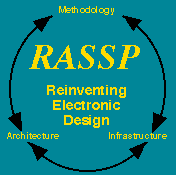

- Principal Investigator: Edward A. Lee
- Organization: University of California at Berkeley
- Start date: September 1993.
- End date: July 1997.
|
|
 |
This project was completed in July of 1997.
It was part of the
Rapid Prototyping of
Application-Specific Signal Processors (RASSP) program
at the
Electronics Technology Office
of the
Defense Advanced Research Projects Agency (DARPA).
The reports are included here for archival purposes.
|
The project aimed to develop formal models for such heterogeneous systems, a software environment for the design of such systems, and synthesis technologies for implementation of such systems. In the latter category, we were concentrating on problems not already well addressed elsewhere, such as the synthesis of embedded software and the partitioning and scheduling of heterogeneous parallel systems.